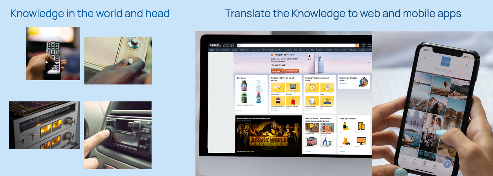
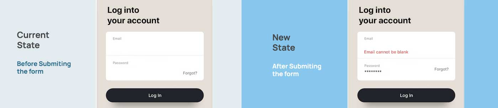
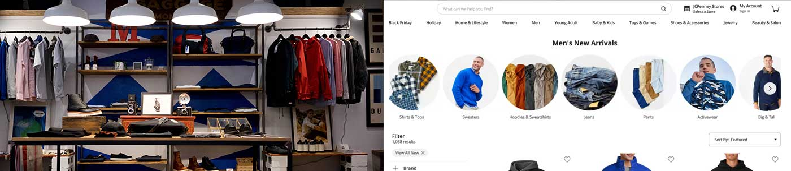
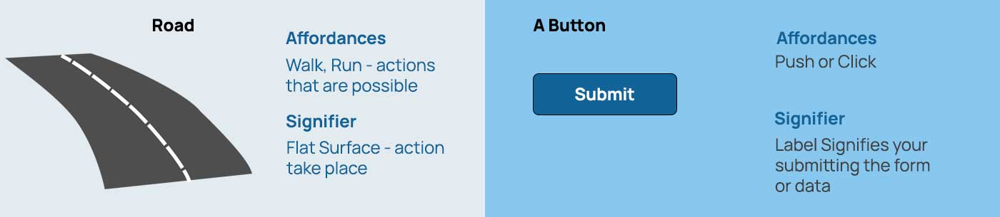
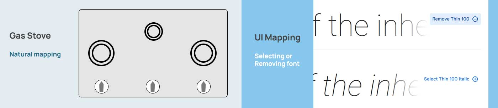
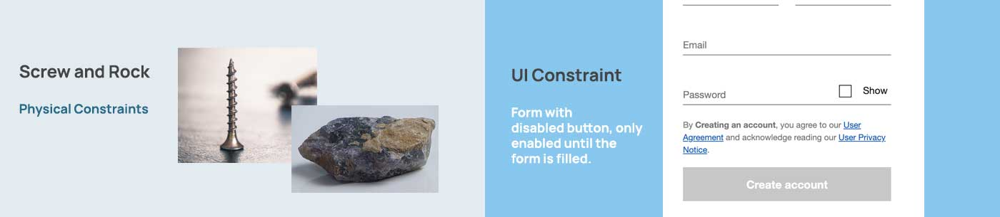

Interaction Design: Knowledge in the world and head
The Knowledge in the world is how we perceive and interact with the objects present in the world around us. The picture in the left below shows chair, table, kettle, door handle and water jug / pitcher, which has perceived affordance's(what actions are possible) and signifier's(where the action takes place) to help us interact with the objects. This works at subconscious level which is called Visceral Processing inside our human brain (Human cognition and emotion).
Knowledge in the head is memory. The skills we learn and practice are stored in our memory. This too works at subconscious level which is called Behavioral level processing. Once we learn and practice for more number of hours it's stored in our memory and we do tasks effortlessly.

We need both Knowledge in the world and Knowledge in the head, which determines our behavior. When the knowledge is readily available in the word to perform a task, the effort to learn is reduced. Consider a screw, it has projections, you can remove it or replace it effortlessly. The knowledge of removing and replacing is easy because we encounter screws in many of the objects such as chair, shelves, table, drawers and even toys. We know how screw works so the learning is reduced while replacing or removing. Now lets consider playing a musical instrument, the effort put to learn the instrument is high. But once we learn and practice more it stores in our memory and then it becomes easy to play the musical instrument.
Applying the above principles to Apps and Web application
A good design is about discoverability, understanding and having a good conceptual model(something to work). Users spend lot of time with the objects around the world and have a mental model(something will work) in their mind. The expectation the user's have while interacting with a product is based on the knowledge they have. Its important that we design the conceptual model based on this principle.

People use a product and expect how it should work.
Based on past experience and mental model, people while interacting with a product have expectation how something will work. Discoverability, based on affordances and signifiers like buttons, labels, pictures and links people start interacting using click or swipe gestures to complete the task. Understanding, what does the settings mean?, how to use it?, what each functionalities mean? and how to accomplish the task?
When the expectations do not match users get frustrated and they are unlikely to visit or use the product. Users go elsewhere like other website or apps to get the task completed. User’s who try to use conscious(Reflective Processing) effort to complete a task use lot of mental resources which make them feel uncomfortable in real world by comparing what has happened and with previous experience or reasoning the outcome. Knowledge in the world and head creates a behavior pattern in users. When user confronts a task to be completed, if it is done without much mental effort(subconsciously), the task is easy to accomplish.
Knowledge of and Knowledge how
Knowledge of, is declarative knowledge (rules and facts). Like, ‘Capital city is Delhi’. ‘There are Seven days in a Week’. ‘Earth Revolves around Sun’. ‘We cross the road using Zebra Crossing’. People use this knowledge to understand what is true and what is not true. And rules are not followed everywhere in the world.
Knowledge how, is procedural knowledge. Learning to play a music instrument, catching a ball when it is thrown at you, answering questions when your skills (be it mathematics, science) is tested with much ease. Procedural knowledge is stored at subconscious Level.
Knowledge in the World, is signifiers, affordances and actions takes that place based on physical constraints. Knowledge in the head, is conceptual model, logical constraints and similarities between what has happened and previous experience. We need both, it’s ineffective when one is left out.
Design Psychology: Using Psychology while designing UX for your products.
Knowing Psychology about users is time worth spent in designing your User Experience. As the digital world is moving fast at a greater speed, understanding the user’s behavior is more important.
As per psychology the human brain consists of more than 80-100 billion neurons, some of them waiting to be wired with new experience that stores as new memory. Every day from the day we are born our brain senses a new smell, sight, touch, sound and taste. Digital world as taken over our lives, we have lot of gadgets around us consuming digital data. So how to design a product with help of psychology that stands out of crowded apps or website. Using Psychology in our User experience design can bridge the gap between your user and product.

Memory – Repetitive action makes memory stick.
A lot of mental resources in our brain is processed due to memorizing things. A normal user remembers only four items at a time. Repetitive action makes memory stick. So, placing a home button in the same place in your website/app makes life easier for the user. Even consistent use of phrase of the button makes the user predict the action of the button before he clicks.
Thinking – Mental model and Conceptual model
When a new product is given to user, based on the mental model the user starts interacting with it. We designers design conceptual model based on assumptions and try to fit the mental model by using task analysis, persona and user journey to validate the mental model while designing the interface. So, understanding the mental and conceptual model makes life easier. Ex: Designing an Online form (conceptual model) with bit-sized chunks and grouping related items like the manual form (mental model) makes life easier for the user.
Read – Capital Letters, Small Letters and Length of Text.
Using capital letters and small letters forms a pattern within the user’s mind. It’s a myth that people can’t read capital letters easily. Both capital and small letters are easy to read by reducing the length of the text between 72 to 100 characters. Aren’t we used to read newspaper? And varying the font size forms a hierarchy for the users.
Seeing – Peripheral Vision and Central Vision.
We see objects more using Peripheral Vision than using Central Vision. While we walk in traffic, we tend to see the obstacles that come our way by using peripheral vision. So, while browsing a website/app we tend to see more of visual cues using peripheral vision. Visual Cues can be colour, button, links, and images. So, designing visual cues to bring user attention is more important to invite interaction.
Attention – Danger, Food, Sex, Movement, Faces and Stories.
The chemical dopamine in our brain brings attention to danger, food, sex, movement, faces and stories. Using error messages with red colour, images of food, images of celebrity and animation in screen brings more attention to the user. Ex: Notifications popping at your right bottom of your monitor screen (Movement).
Visual Design Principles
Visual Consistency, Proximity, Similarity, Contrast and Visual Hierarchy are some of the principles that can be used to enhance the visual identity. While designing any design system, take these principles into considerations.

UX: Fundamental principles of design
As a designer when user interacts with any product we need to understand the actions for the questions from user prespective like, What do I want to accomplish?, What are the alternate action sequences?, What action can i do now?, How do I do it? What happened? What does it mean? and Have I accomplished the goal?. The below design principles when applied answer the user's question while designing a product.
Discoverability
When the user sees a Mobile app or Website can he determine what actions are possible and understand the current state of the app.
Feedback
Feedback should inform the user about the current state of the app and the new state after executing the action of a task performed by user.
Conceptual Model
All the information needed to create a good conceptual model should be taken care while designing a app leading to discoverability, understanding, feeling of control and evaluate the results based on expectations.
Affordances and Signifiers
Affordances: What are the proper Affordances exist to make desired actions possible within the app?. A button in the app. Signifiers: This ensures discoverablity of what to do and where to do. Like label in the button.
Mappings
The relationship between controls and their actions follows the principles of Good mapping with enhanced layout and placing UI elements near intended actions.
Constraints
Constraints can be physical(projections of screw or rock or chair), logical(specific action needed for the specific context), semantic(arranged in order), and cultural(manners observed while in lift - being quiet or shouting) constraints. While designing for apps we should provide constraints which guides actions and eases interpretation
UX: Context is everything
When designers asked about how do you solve the problem while designing user experience. The answer to most of the questions is "It Depends, based on context". As a a designer Understanding Context when creating User Experience design for products is a most essential skill to be learnt. When doing user research, creating IA or creating wireframes context play a important role
Contextual Inquiry in User Research
Observing user how a task is performed in their natural environment, what behavior patterns do they use to perform a task, do they use any physical items like pencil or paper to take notes, what devices do they use, do they sit or stand, do they sit in a office or daylight or busy environment, do they walk and use mobile or sit before a computer to perform the task. All these observation is part of contextual inquiry. "Designing for context" helps us to create better products.
Context while creating Information Architecture
While creating IA, we need to understand how user navigate through a product. IA should help the user to achieve the goal or task while providing correct information at the specific context. Removing, adding content and does the content makes sense for the current context of the task helps user to perform their task with ease. While designing IA we need to understand context from user perspective like,
- Where am I?
- How did I get here?
- Where do I go from here?
- What can I do here?
Context while creating UI Design
While creating UI we need to make sure based on the context of the task we need to place the UI elements in a page. We can disable or enable the UI elements based on context while user is performing the task(Progressive disclosure - show/hide content or UI only for that specific context). When we design for context we can understand which UI elements or UI patterns are needed for the specific page.